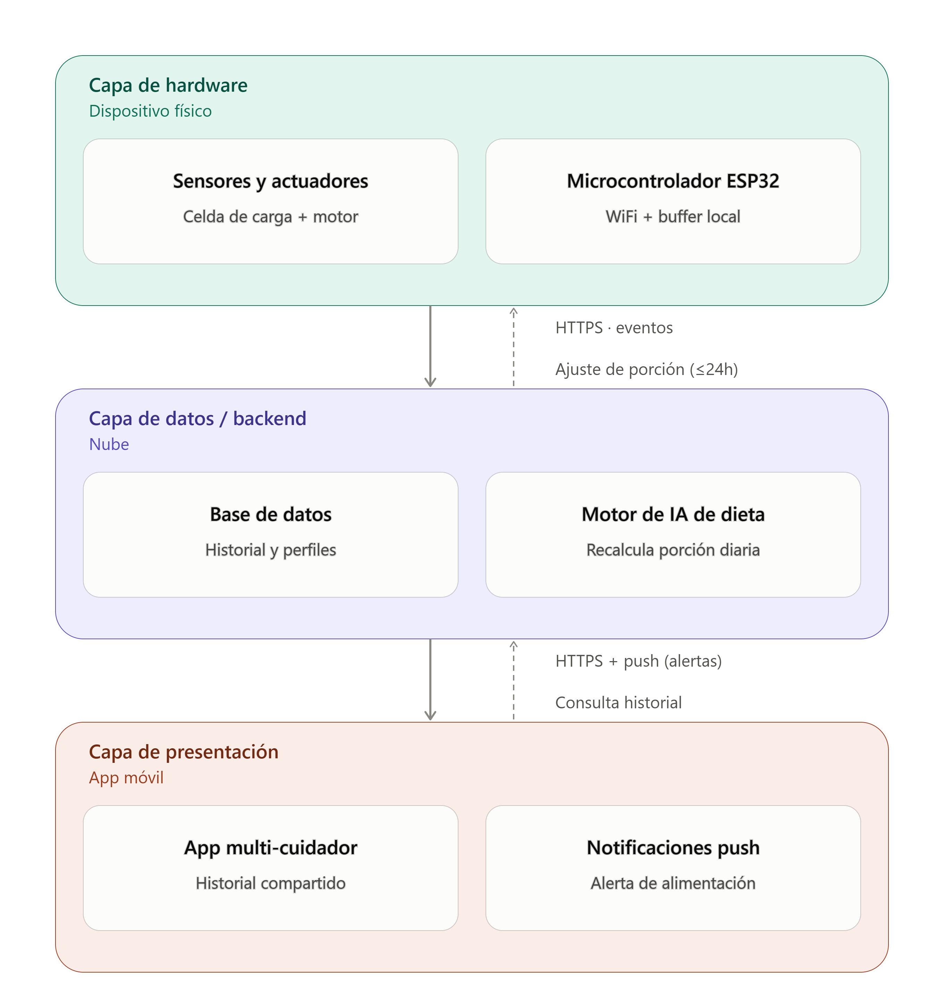

Product Design Specification
En pocas palabras es:
- Poner las limitaciones de hasta dónde llega el proyecto
- Qué debe hacer
- Bajo qué condiciones
💬 Prompt
Elabora el Product Design Specification (PDS) de MI PROYECTO utilizando toda la información que ya tienes precargada sobre mi proyecto, usuario, problema, propuesta de valor, solución y contexto.
El PDS debe traducir la propuesta de valor en requerimientos técnicos concretos, verificables y medibles. NO describas cómo construir el producto; define qué debe hacer, bajo qué condiciones y cómo sabremos que funciona.
1. REQUERIMIENTOS FUNCIONALES
Define qué debe hacer el producto y cómo interactúa con: el usuario, el entorno físico, otros sistemas o dispositivos, cualquier software/app involucrado. Cada requerimiento debe ser específico y comprobable.
2. REQUERIMIENTOS DE DESEMPEÑO
Define qué tan bien debe funcionar el producto. Incluye, cuando aplique: precisión, velocidad/tiempo de respuesta, capacidad, autonomía, frecuencia de operación, confiabilidad, rangos de operación, cualquier otra métrica crítica. Evita términos ambiguos como "rápido", "preciso" o "fácil"; conviértelos en valores medibles.
3. REQUERIMIENTOS DE INTERFAZ
Define cómo debe interactuar el producto con: usuario, app/software, hardware u otros dispositivos, entorno físico. Incluye aspectos de comunicación, instalación, interacción, señales, datos y compatibilidad cuando sean relevantes.
4. REQUERIMIENTOS DE RESTRICCIÓN
Identifica los límites que el diseño debe respetar: presupuesto, tiempo de desarrollo, disponibilidad de componentes/materiales, manufactura, dimensiones/peso si son relevantes, compatibilidad, regulaciones o normas aplicables, tecnologías obligatorias o limitaciones del proyecto.
5. FIRST-ITERATION PRODUCT
IMPORTANTE: el PDS debe describir el first-iteration product, NO un prototipo de exploración. Por lo tanto, los requerimientos deben permitir que: el producto funcione de manera autónoma, un usuario real pueda utilizarlo sin que el equipo tenga que explicarle o intervenir, pueda probarse en condiciones reales de uso, el éxito pueda validarse mediante criterios objetivos. No agregues funcionalidades innecesarias que no sean indispensables para validar la propuesta de valor en esta primera iteración.
FORMATO FINAL
Presenta los requerimientos en una tabla: ID | Categoría | Requerimiento | Criterio medible/verificable | Prioridad. Utiliza IDs diferentes para cada categoría: F = Funcional, D = Desempeño, I = Interfaz, R = Restricción.
Al final, agrega una sección breve de "Criterios de éxito del first-iteration product", indicando cuáles son los requerimientos indispensables que deben cumplirse para considerar que el producto funciona y puede ser probado por un usuario real.
IMPORTANTE: Adapta todo exclusivamente a MI PROYECTO y a la información que ya tienes. No utilices el ejemplo del sensor agrícola como contenido; úsalo únicamente para entender la metodología. No inventes especificaciones técnicas sin fundamento. Si un valor numérico no puede determinarse con la información disponible, propón un rango razonable y márcalo claramente como "por validar". Todos los requerimientos deben poder comprobarse mediante una prueba, medición, observación o criterio objetivo.
Respuesta: Product Design Specification (PDS)
Proyecto: Comedero inteligente para perros con sensor de peso, dispensador automático y app con IA para ajuste de dieta (Fab Academy Puebla, Proyectos IV).
Esta tabla define el first-iteration product: la versión mínima que ya puede funcionar de forma autónoma, ser usada por un dueño de perro real sin intervención del equipo, y validar la propuesta de valor (dosificación por peso + IA + coordinación entre cuidadores). No incluye funciones descartadas en el análisis Blue Ocean (cámara, video, interacción por voz), ya que no son indispensables para validar la propuesta.
Los valores marcados como "por validar" no están definidos en la información que tengo registrada de tu proyecto; incluyo un rango de referencia razonable para que lo confirmes o ajustes con datos reales de tu curso.
| ID | Categoría | Requerimiento | Criterio medible/verificable | Prioridad |
|---|---|---|---|---|
| F-01 | Funcional | El comedero debe dispensar alimento automáticamente según una programación configurada por el usuario en la app. | Se ejecuta el 100% de los eventos programados en una prueba de 7 días consecutivos, verificado por registro de log. | Alta |
| F-02 | Funcional | El sensor debe medir el peso del perro en cada evento de alimentación (o en un evento dedicado de pesaje). | Cada evento de alimentación queda asociado a una lectura de peso registrada en la app, sin intervención manual del usuario. | Alta |
| F-03 | Funcional | El sistema debe calcular la porción a dispensar según el objetivo de peso definido (subir, bajar o mantener) usando el modelo de IA. | Ante un cambio de peso registrado, la porción sugerida se recalcula automáticamente en un plazo ≤24 h sin acción manual del usuario. | Alta |
| F-04 | Funcional | El sistema debe registrar cada evento de alimentación (fecha, hora, cantidad dispensada, peso medido) en la app. | El historial muestra el 100% de los eventos ocurridos en las últimas 4 semanas, consultable por el usuario. | Alta |
| F-05 | Funcional | La app debe permitir que 2 o más cuidadores del mismo perro vean el mismo registro de alimentación. | Un segundo usuario agregado ve, en ≤5 minutos desde el registro, el mismo evento de alimentación que el primero. | Alta |
| F-06 | Funcional | El sistema debe notificar a los cuidadores cuando el perro ya fue alimentado, para prevenir doble alimentación. | El 100% de los eventos de alimentación generan una notificación visible a todos los cuidadores registrados en ≤2 minutos. | Alta |
| F-07 | Funcional | El usuario debe poder configurar el perfil inicial del perro (peso objetivo, peso actual) sin soporte del equipo de desarrollo. | Un usuario no capacitado completa la configuración inicial sin asistencia externa (ver I-04). | Alta |
| F-08 | Funcional | El dispensado programado debe ejecutarse aunque no haya conexión a internet en el momento exacto del evento. | El comedero dispensa correctamente en modo sin conexión y sincroniza el registro con la app al recuperar señal, en una prueba controlada de corte de red. | Media |
| D-01 | Desempeño | La porción dispensada debe ajustarse con precisión respecto a la cantidad calculada por el algoritmo. | Error ≤ ±5% del peso calculado (por validar contra la tolerancia real que el equipo defina como aceptable para el ajuste de dieta). | Alta |
| D-02 | Desempeño | El sensor de peso debe medir con precisión suficiente para detectar cambios relevantes en la salud del perro. | Precisión ≤ ±0.1–0.2 kg en el rango de peso soportado (por validar según el sensor/celda de carga elegida). | Alta |
| D-03 | Desempeño | El sistema debe actualizar el registro en la app en un tiempo razonable tras cada evento. | Latencia entre evento físico y visualización en app ≤ 10 segundos con conexión WiFi estable (por validar). | Media |
| D-04 | Desempeño | El depósito debe tener capacidad suficiente para operar varios días sin recarga. | Capacidad de 2–4 litros, suficiente para ≥ 5 días de operación continua para un perro de tamaño mediano (por validar según porciones reales). | Media |
| D-05 | Desempeño | El mecanismo dispensador debe ser confiable en operación repetida. | Tasa de fallos de dispensado ≤ 5% de los eventos programados durante una prueba de 30 días. | Alta |
| D-06 | Desempeño | El sistema debe soportar el rango de peso de perros del segmento de usuario objetivo. | Rango soportado: 2–40 kg (por validar contra el segmento de usuarios entrevistados; puede requerir ajuste mecánico si se prioriza solo razas medianas/grandes). | Media |
| D-07 | Desempeño | La frecuencia de dispensado debe cubrir los patrones de alimentación reales de los usuarios. | Configurable entre 1 y 6 eventos por día (por validar contra hábitos reportados en tus entrevistas). | Media |
| I-01 | Interfaz | La app debe mostrar el peso actual y la tendencia histórica del perro de forma accesible. | El usuario accede a la gráfica de tendencia de peso en ≤2 toques desde la pantalla principal. | Media |
| I-02 | Interfaz | El comedero debe comunicarse con la app mediante WiFi doméstico estándar. | Conexión exitosa a redes 2.4 GHz con reconexión automática tras una caída de señal simulada, sin intervención manual. | Alta |
| I-03 | Interfaz | El comedero debe confirmar localmente cada dispensado exitoso, sin depender de la app. | Señal visual y/o sonora perceptible a ≥1 metro de distancia en el 100% de los eventos de dispensado. | Media |
| I-04 | Interfaz | La instalación inicial debe poder completarse sin conocimientos técnicos ni intervención del equipo. | Un usuario no capacitado completa unboxing + configuración inicial en ≤15 minutos, siguiendo solo instrucciones incluidas. | Alta |
| I-05 | Interfaz | La app debe permitir agregar cuidadores adicionales de forma autónoma. | Un usuario agrega a un segundo cuidador mediante código/enlace en ≤3 minutos, sin soporte externo. | Alta |
| I-06 | Interfaz | La app debe ser compatible con los sistemas operativos móviles usados por el segmento de usuario objetivo. | Funciona en Android e iOS (por validar contra el sistema operativo real de los dueños entrevistados). | Media |
| R-01 | Restricción | El costo de materiales por unidad debe ajustarse al presupuesto disponible del curso. | Costo total de componentes ≤ [monto por validar], según presupuesto asignado en Proyectos IV. | Alta |
| R-02 | Restricción | El desarrollo debe completarse dentro del calendario académico del curso. | Producto funcional y probable con usuario real antes de la fecha límite del curso (por validar). | Alta |
| R-03 | Restricción | Los componentes deben poder conseguirse dentro del tiempo disponible del proyecto. | Todos los componentes críticos disponibles con entrega ≤ [plazo por validar] desde proveedores locales o en línea. | Alta |
| R-04 | Restricción | La fabricación debe ser posible con las herramientas del Fab Lab. | El prototipo se produce usando únicamente equipo disponible en el Fab Lab (impresión 3D, corte láser, electrónica básica), sin maquinaria externa. | Alta |
| R-05 | Restricción | El material en contacto con el alimento debe ser seguro para uso con alimento para mascotas. | Material del contenedor/tolva es apto para contacto alimentario (por validar si se requiere certificación formal o basta con criterio de material food-grade). | Alta |
| R-06 | Restricción | El producto no debe requerir infraestructura adicional en el hogar del usuario. | Funciona únicamente con WiFi doméstico estándar y toma eléctrica convencional, sin hardware adicional de red. | Media |
Criterios de éxito del first-iteration product
Para considerar que el producto está listo para ser probado por un usuario real (dueño de perro, con al menos un segundo cuidador), deben cumplirse de forma indispensable:
- F-01, F-02, F-03, F-04: el ciclo completo de dispensar → pesar → recalcular porción → registrar debe funcionar de extremo a extremo sin intervención del equipo.
- F-05 y F-06: la coordinación entre al menos dos cuidadores debe funcionar, ya que es el problema central que validaste en tus entrevistas — sin esto, no se prueba la propuesta de valor diferenciadora.
- F-07 e I-04: un usuario no capacitado debe poder configurar el dispositivo por sí mismo; si el equipo tiene que explicar el uso, no califica como first-iteration product según tu propio criterio.
- D-01, D-02 y D-05: la precisión de dosificación, la precisión del sensor de peso y la confiabilidad mecánica deben cumplir sus umbrales, porque son la base técnica de la propuesta "ajuste de dieta por IA" — si fallan, el producto no cumple su promesa central aunque todo lo demás funcione.
- I-02 e I-03: la comunicación WiFi y la confirmación local de dispensado deben funcionar de forma confiable, para que el usuario confíe en el sistema sin supervisión constante.
Los requerimientos marcados como "por validar" (presupuesto, plazos, capacidad del depósito, rango de peso soportado, sistema operativo predominante) son datos que aún no están documentados en tu proyecto y conviene definir antes de fijar la especificación final, ya que varios criterios de desempeño y restricción dependen directamente de ellos.
Ejercicio rápido en clase
Perfecto, para el PDS (Product Design Specification) de tu comedero inteligente, aquí tienes dos requerimientos por categoría, adaptados a tu proyecto:
Requerimientos Funcionales
- El sistema debe dispensar automáticamente una cantidad de alimento calculada por la app con IA, según el peso actual y el peso objetivo del perro.
- El sistema debe registrar el peso del perro mediante el sensor integrado cada vez que se acerque al comedero, y enviar este dato a la app para actualizar el seguimiento de la dieta.
Requerimientos de Desempeño
- El sensor de peso debe tener una precisión mínima de ±20 gramos para garantizar un cálculo confiable de las porciones.
- El dispensador debe entregar la porción calculada en un tiempo no mayor a 10 segundos desde que se activa el mecanismo.
Requerimientos de Interfaz
- La app debe mostrar de forma clara y accesible el historial de peso del perro y el estado de su dieta (subiendo, bajando o manteniendo), permitiendo que múltiples cuidadores consulten esta información.
- El comedero debe contar con indicadores físicos (LED o pantalla pequeña) que muestren el estado de operación (dispensando, nivel bajo de alimento, error de conexión, etc.).
- La app mandará un mensaje por WhatsApp o como notificación de la aplicación al cuidador cuando: el nivel de alimento sea bajo o se sugiera una visita preventiva con el veterinario.
Requerimientos de Restricción
- El costo total de los componentes electrónicos y mecánicos no debe exceder el presupuesto definido para el prototipo (ajusta este monto al que tengas asignado en tu curso).
- El diseño físico debe ser compatible con perros de al menos dos rangos de tamaño (pequeño y mediano/grande), sin comprometer la seguridad del mecanismo dispensador.
- Falta: El precio del producto no debe exceder el de los competidores y que quede un buen margen de ganancia.
B2: Arquitectura del sistema
Dónde va a correr la IA: Híbrido (toma decisiones rápidas al momento) / Edge / Claude (conectividad estable en la red), app (para conectar el programa).
💬 Prompt
Actúa como arquitecto de sistemas especializado en productos mecatrónicos con IA.
Utiliza toda la información que ya tienes precargada sobre MI PROYECTO, incluyendo su propuesta de valor, PDS, usuario, requerimientos, capacidades del equipo y restricciones.
Define la arquitectura completa del sistema considerando:
- Arquitectura de IA: determina si conviene Edge, Cloud o Híbrida y justifica la decisión según conectividad, latencia, privacidad, costo y capacidades del proyecto.
- Tres capas del sistema:
- Hardware: sensores, actuadores, microcontrolador/SBC, alimentación y comunicación.
- Datos/Backend: almacenamiento, procesamiento, IA y servicios necesarios.
- Presentación: app/web, interfaz y notificaciones.
- Comunicación: especifica qué protocolo utiliza cada conexión (BLE, WiFi, MQTT, HTTP, WebSocket, etc.) y justifica brevemente por qué es adecuado.
- Flujo de datos: describe paso a paso cómo viaja la información desde que se genera en el dispositivo hasta que llega al usuario y qué ocurre si algún componente falla.
- Viabilidad: verifica que la arquitectura sea realizable con las capacidades, presupuesto, tiempo y volumen de fabricación de la primera iteración.
ENTREGA:
- Decisión Edge/Cloud/Híbrido + justificación.
- Diagrama de bloques de la arquitectura.
- Componentes principales de cada capa.
- Protocolos de comunicación.
- Flujo de datos principal.
- Principales riesgos o incompatibilidades que debamos resolver.
IMPORTANTE: No diseñes la arquitectura más sofisticada, sino la más adecuada para MI PROYECTO y su first-iteration product. No inventes requerimientos que no estén respaldados por la información disponible.
Respuesta

Arquitectura del sistema — Comedero inteligente
1. Decisión: arquitectura híbrida (Edge + Cloud)
Ni Edge puro ni Cloud puro se ajustan bien a tu proyecto; una arquitectura híbrida es la más adecuada, por estas razones ligadas directamente a tu PDS:
- Conectividad: el requerimiento F-08 exige que el dispensado funcione aunque no haya internet en ese momento. Esto obliga a que la lógica crítica (dispensar según el horario programado) viva en el dispositivo (Edge), no en la nube.
- Latencia: dispensar comida y confirmar localmente (I-03) debe ser inmediato; depender de un viaje de ida y vuelta a un servidor remoto para esa acción sería innecesario y riesgoso si la red falla.
- Privacidad: los datos que maneja el sistema (peso del perro, historial de alimentación, identidad de cuidadores) no son de sensibilidad extrema, pero sí personales — no justifican mantener todo en el dispositivo por privacidad, así que no es un factor que empuje hacia Edge puro.
- Costo y capacidades del equipo: el cálculo de dieta con IA (F-03) tiene una ventana de hasta 24 horas para recalcularse — no es una tarea en tiempo real. Ejecutarlo en la nube es más barato y viable para un equipo de Fab Academy que implementar un modelo de IA embebido en un microcontrolador de bajo costo (que además no tiene cámara ni necesidad de visión, según tu decisión Blue Ocean de eliminar esa función).
En resumen: Edge controla lo que debe funcionar siempre y de inmediato (dispensado, pesaje, confirmación local); Cloud hace lo que requiere más cómputo, historial compartido entre varios cuidadores y no es sensible a milisegundos (cálculo de dieta, sincronización multi-usuario, notificaciones).
2. Las tres capas (ver diagrama)
Hardware (Edge, en el dispositivo)
- Sensores y actuadores: celda de carga (peso) + motor/mecanismo dispensador.
- Microcontrolador (tipo ESP32, ya que integra WiFi de forma nativa, es económico y compatible con las herramientas del Fab Lab por R-04): ejecuta el horario de dispensado, lee el sensor, mantiene un buffer local para operar sin conexión (F-08) y emite la señal de confirmación local (I-03).
Datos / backend (Cloud)
- Base de datos: guarda el historial de eventos, perfiles de perro y de cuidadores (soporta F-04, F-05).
- Motor de IA de dieta: procesa la tendencia de peso y recalcula la porción recomendada dentro de la ventana de 24 h definida en F-03. No necesita ejecutarse en tiempo real, por lo que vive cómodamente en la nube.
Presentación (App móvil)
- App multi-cuidador: muestra historial y tendencia de peso (I-01), permite agregar cuidadores (I-05).
- Notificaciones push: alerta a todos los cuidadores cuando el perro ya fue alimentado (F-06).
3. Protocolos de comunicación
- ESP32 ↔ router WiFi doméstico: WiFi 802.11 (2.4 GHz), tal como especifica I-02 — es el estándar más simple de implementar y compatible con cualquier hogar sin infraestructura adicional (R-06).
- ESP32 → backend: HTTPS (REST). Se eligió sobre MQTT porque la frecuencia de eventos es baja (unas pocas veces al día, según D-07), por lo que no se justifica la complejidad de un broker pub/sub; HTTPS es más simple de implementar dado el tiempo y capacidades disponibles del equipo (R-02).
- Backend → app: HTTPS para consultas de historial (bajo demanda) + un servicio de notificaciones push (ej. FCM/APNs) para las alertas en tiempo casi real que exige F-06 (≤2 minutos).
- Backend → ESP32: HTTPS, en sentido inverso, para bajar la porción recalculada por el motor de IA (ventana de hasta 24 h, sin urgencia de latencia).
- Sensor/motor ↔ ESP32: interfaz cableada directa (no es un protocolo de red) — por ejemplo, el patrón de dos hilos típico de un amplificador de celda de carga hacia el microcontrolador.
4. Flujo de datos, paso a paso
- Llega la hora programada; el ESP32 activa el motor y dispensa la porción que tiene almacenada localmente (la última recibida del backend).
- El sensor de peso registra la lectura correspondiente al evento.
- El ESP32 guarda el evento (hora, cantidad, peso) en su buffer local y emite la confirmación local (LED/sonido).
- El ESP32 intenta enviar el evento al backend por HTTPS.
- Si hay conexión: el backend recibe el evento, lo guarda en la base de datos y dispara una notificación push a todos los cuidadores registrados.
- Si no hay conexión (falla de red): el evento permanece en el buffer local; el ESP32 reintenta con el tiempo, y sincroniza todos los eventos pendientes en orden en cuanto vuelve la señal — el dispensado y el pesaje ya ocurrieron y no se pierden.
- Una vez al día (o según se defina), el motor de IA en el backend revisa la tendencia de peso y recalcula la porción objetivo.
- El backend envía esa nueva porción al ESP32, que la guarda para el siguiente ciclo de dispensado.
- Cualquier cuidador puede abrir la app en cualquier momento para consultar el historial y la tendencia de peso vía HTTPS.
Qué pasa si falla cada componente:
- Falla el WiFi/backend: el dispensado sigue funcionando con la última porción sincronizada; solo se retrasan el historial compartido y las notificaciones hasta que vuelva la conexión.
- Falla el sensor de peso: el sistema debería señalar el error localmente (I-03) y evitar que el motor de IA recalcule con datos corruptos — este manejo de error no está definido todavía en tu PDS y es un vacío a resolver.
- Falla el mecanismo dispensador (atasco): debe generar una señal de error local y quedar registrado como evento fallido para el seguimiento de confiabilidad (D-05).
5. Viabilidad para la primera iteración
La arquitectura es coherente con las restricciones ya definidas en tu PDS:
- Presupuesto (R-01): un ESP32 + celda de carga + motor es de bajo costo comparado con soluciones con cámara o cómputo embebido de IA.
- Manufactura (R-04): se fabrica con herramientas típicas de un Fab Lab, sin equipo especializado adicional.
- Tiempo (R-02): usar HTTPS simple y un backend ligero (en vez de infraestructura pub/sub o IA embebida) reduce la complejidad de desarrollo dentro del calendario del curso.
- Volumen de la primera iteración: al ser una sola unidad de prueba con un usuario real, no se requiere diseñar para escalar a múltiples dispositivos simultáneos todavía — eso simplifica el backend inicial.
Principales riesgos o incompatibilidades a resolver
- No hay proveedor de IA/cloud definido: como ya se señaló en el análisis de Porter, este es un vacío de información que afecta directamente el diseño del backend y del motor de IA de dieta — conviene decidirlo antes de implementar.
- Capacidad del buffer local no definida: si el dispositivo pasa mucho tiempo sin conexión, el buffer del ESP32 podría llenarse; el PDS no especifica cuánto tiempo offline debe soportar el sistema — dato "por validar".
- Precisión del sensor de peso en condiciones reales: un perro comiendo se mueve, lo cual puede afectar la lectura de la celda de carga; esto no está resuelto a nivel mecánico ni de firmware todavía.
- F-06 (notificación ≤2 min) depende de que el dispositivo esté conectado en el momento del evento: si el ESP32 está offline cuando ocurre el evento, la notificación se retrasará hasta la reconexión — esto es una condición no cubierta explícitamente en el requerimiento original y conviene aclararla (¿se acepta el retraso, o se necesita otro mecanismo?).
- Capacidad de desarrollo del equipo no documentada: no tengo información confirmada de si el equipo cuenta con experiencia en desarrollo backend/app móvil dentro del tiempo del curso — esto podría ser el mayor riesgo práctico para cumplir el cronograma (R-02), independientemente de si la arquitectura es correcta en el papel.
Reflexión
Esta semana me ayudó a dejar el proceso un poco más claro y mucho más acotado debido a que pude ver con mayor facilidad que sí conviene que mi comedero automático tenga y qué no vale la pena.
Además, considero que en esta semana me metí más de lleno a ver mis competidores directos como indirectos, por lo cual, pude también tener una idea más clara de lo que suelen compartir estos comederos y las soluciones a problemas comunes que éstos suelen tener en los mecanismos. Sin embargo, creo que necesito un poco más de orientación respecto a la cuestión electrónica y la forma más fácil para la construcción de este comedero.